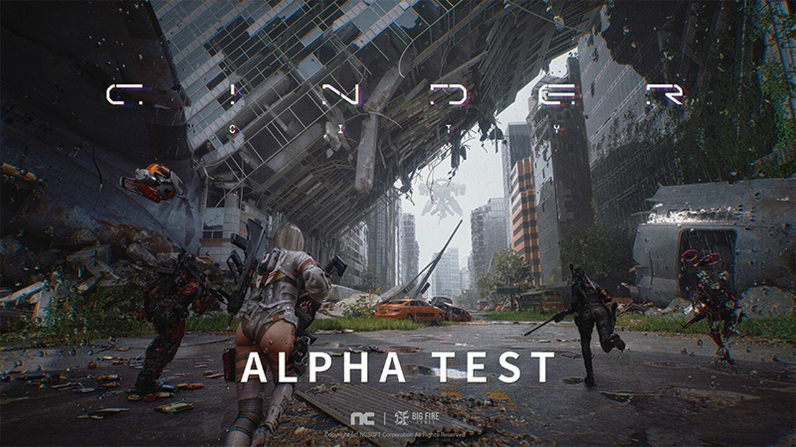
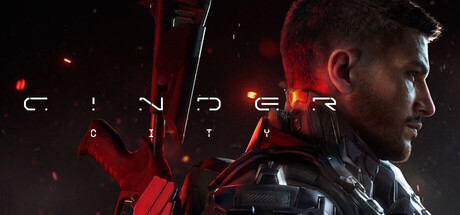
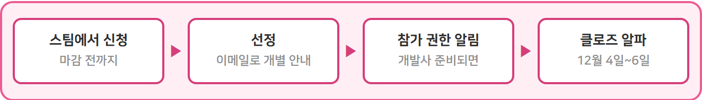
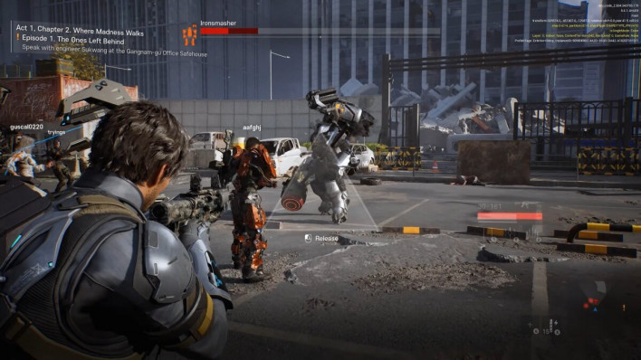

신더시티 출시일 클로즈 알파 신청 방법 11월 30일 PST 마감
신더시티 출시일부터 찾아보신 분들께 먼저 답부터 드릴게요. 정식 출시일은 공식으로 나오지 않았고, 지금 확정된 건 12월 4일부터 6일(PST 기준)까지 열리는 클로즈 알파뿐이에요. 한국 이용자는 스팀에서 11월 30일(PST 기준)까지 신청하면 돼요. 「신더시티(CINDER CITY)」는 NC가 내놓는 오픈월드 3인칭 슈터라서, 출시 날짜를 기다리기보다 이번 테스트 신청 경로를 먼저 챙기시는 편이 훨씬 실속 있죠~

알파 테스트 소식에 쓰인 공식 이미지예요.
이미지 출처: 인벤 신더시티 클로즈 알파 기사 대표 이미지 ⓒNC · 네이버 본문엔 받아서 재업로드 권장
신더시티 출시일은 정해졌나요?
신더시티의 정식 출시일은 아직 공식 미공개이고, 날짜가 잡힌 건 12월 4일부터 6일까지의 클로즈 알파 하나뿐인데요. 스팀 상점에는 아직 «출시 예정»으로만 적혀 있고, 알파는 2026년 4분기 목표대로 12월에 열리는 모양이에요. 알파 뒤에는 베타로 이어진다고 하니 출시 시기를 점치기엔 아직 일러요.
참고로 클로즈 알파는 정식 출시보다 한참 앞선 개발 초기 단계의 빌드를 선정된 인원에게만 먼저 열어 보는 비공개 테스트예요. 알파는 베타보다 완성도가 낮고 바뀌는 부분도 많거든요. 그래서 이번 소감이 곧 출시 때 모습이라기보단 방향을 가늠하는 자리로 보시는 편이 마음이 편하죠. 지금까지 공개된 날짜를 한 줄로 세우면 이래요.
| 시점 | 내용 |
|---|---|
| 6월 30일 | 스팀 상점 페이지 공개 |
| 8월 14일~16일 | 미국 한정 프리 알파(16세 이상) |
| 11월 12일 | 클로즈 알파 신청 접수 시작 |
| 11월 30일(PST 기준) | 신청 마감 |
| 12월 4일~6일(PST 기준) | 클로즈 알파 테스트(PC·스팀) |
한국에서는 스팀 어디서 신청하나요?
한국 이용자는 스팀의 신더시티 상점 페이지에서 Playtest 참가를 신청하는 방식이에요. 스팀 앱 ID 4651830번 페이지에 «CINDER CITY Playtest 참가» 항목이 따로 있는데, 신청한다고 바로 접속이 열리는 건 아니고 개발사가 참가 권한을 줄 준비가 되면 알림을 받는 방식이에요. 접수는 11월 12일에 열려서 지금도 진행 중이니 허겁지겁 서두를 필요는 없지만, 마감일이 정해져 있으니 미루지 않는 게 좋아요. 순서는 이렇게 돼요.
1. 스팀 신더시티 상점 페이지에서 Playtest 항목 찾기
2. 참가 신청 누르기
3. 선정되면 이메일 안내를 받고, NDA가 적용되는 알파에 참가하기

스팀 상점 페이지 맨 위에 걸리는 헤더 이미지예요.
이미지 출처: 스팀 신더시티 상점 페이지 헤더 ⓒNC · 네이버 본문엔 받아서 재업로드 권장
사는 곳에 따라 신청처가 갈리는 것도 알아 두셔야 해요. 만 18세 이상이면서 대상 지역에 사는 분만 신청할 수 있고, 지역별로는 이렇게 나뉘어요.
| 거주 지역 | 신청처 |
|---|---|
| 한국·대만·일본 | 스팀(Playtest 참가 신청) |
| 미국·캐나다·독일·영국·프랑스 | 퍼스트룩(FirstLook) |
| 공통 조건 | 만 18세 이상 + 대상 지역 거주자 |
8월 미국 한정 프리 알파는 16세 이상이었는데 이번엔 만 18세로 문턱이 올랐으니, 미성년이면 신청 대상이 아니라는 점은 미리 아셔야 시간을 아끼죠. 한국 이용자는 퍼스트룩 쪽은 안 봐도 돼요. 신청할 때 쓴 본인 스팀 계정으로만 참가할 수 있고, 타인 계정으로 신청하면 자격이 박탈될 수 있다고 공지에 적혀 있어요.
마감 표기가 PST라는 점도 꼭 짚을게요. PST는 한국보다 시간이 한참 늦어서 한국 달력의 날짜와 하루 어긋날 수 있거든요. 게다가 11월 30일은 월요일이라 주말에 미루다 놓치기 쉬우니 저라면 일요일인 11월 29일 안에 신청을 넣어 둘 것 같아요.
신청하고 나면 어떻게 되나요?
신청 뒤에는 선정된 사람에게만 이메일로 개별 안내가 가고, 알파에는 NDA가 적용돼요. 신청이 곧 참가 확정은 아니라는 얘기죠. 전체 흐름은 이렇게 이어져요.

신청부터 테스트까지 네 칸으로 줄여 봤어요.
공식 공지상 녹화·스크린샷, 라이브 방송, 영상·이미지 업로드, 플레이 경험 공개 게시가 모두 금지예요. 블로그 후기 글이나 방송도 여기에 걸리니 참가하면 공개는 접어 두셔야 해요. 선정 쪽은 공개된 게 거의 없어서 한 번에 모아 둘게요.
| 항목 | 지금 알려진 것 |
|---|---|
| 선정 인원·기준·발표 시점, 탈락 시 안내 | 공식 미공개 |
| 신청 마감 시각 | 아직 안 나왔어요 |
| 12월 4일~6일 시작·종료 시각 | 아직 안 나왔어요, 지역별 세부 운영 시간은 추후 공식 채널 안내 |
| 후기·방송 | 금지(공식 공지) |
| 정식 출시일·가격 | 공식 미공개 |
새 소식은 스팀 페이지, 개편된 공식 웹사이트, 디스코드, YouTube·Facebook·X 같은 공식 채널로 나온다고 해요. 선정 메일은 놓치면 아깝잖아요. 평소 쓰는 메일함과 스팸함을 같이 봐 두시는 게 좋겠죠? 저도 선정 메일이 온다면 NDA 문구부터 먼저 읽어 볼 생각이에요.
어떤 게임이고 PC 사양은 어느 정도인가요?
신더시티는 몰락한 근미래 서울이 배경인 오픈월드 3인칭 슈터예요. 개발명 LLL로 알려졌던 이 게임은 NC 자회사 BIG FIRE GAMES가 개발하고 NC가 배급을 맡았어요. 태그에는 오픈월드·3인칭 슈팅·PvE·PvP·포스트아포칼립스가 붙어 있어요. 한국어 지원에 11개 언어가 표기돼 있네요.

화면에 개발용 표시가 남아 있는 장면이라 지금 빌드와는 다를 수 있어요.
이미지 출처: 인벤글로벌 신더시티 기사 이미지 ⓒNC · 네이버 본문엔 받아서 재업로드 권장
| 구분 | 최소 | 권장 |
|---|---|---|
| CPU | 인텔 i5-10400 또는 라이젠 5 3600 | 인텔 i7-12700 또는 라이젠 7 7800X3D |
| RAM | 32GB | 32GB |
| 그래픽 | RTX 2060 | RTX 4070 |
| 기타 | 윈도우 10·11 64비트, DirectX 12, 초고속 인터넷 | 윈도우 10·11 64비트, DirectX 12, 초고속 인터넷 |
최소부터 RAM이 32GB라서 그래픽카드보다 메모리부터 확인해 보시는 게 좋아요. 권장 그래픽이 RTX 4070이니 중상급 카드는 있어야 쾌적하게 돌리는 수준이네요. 지금 스팀에 적힌 사양이라 알파에 선정되면 안내 메일의 사양도 같이 봐 주시면 돼요.
PvE와 PvP 태그가 함께 붙어 있어서 즐길 거리가 넓어 보이는 게 좋은 점이에요. 오픈월드 3인칭 슈터를 좋아하시는 분이라면 눈여겨볼 만하고, 사양은 메모리부터 확인해 보시면 돼요.
자주 묻는 질문
Q. 신더시티는 무료 게임인가요?
무료 서비스가 아니라 패키지를 사서 즐기는 buy-to-play 방식으로 보도됐어요. 얼리 액세스 없이 정식 출시로 나온다고 해요. 출시 뒤에는 외형 상점과 배틀패스가 들어온다고 하네요.
Q. 콘솔로도 나오나요?
PC가 먼저이고 콘솔은 그다음이에요. 이번 클로즈 알파도 PC(스팀)로만 열려서, 콘솔만 쓰시는 분은 이번 테스트에 참가하려면 PC가 있어야 해요.
정식 출시일은 알파 반응을 본 뒤에야 윤곽이 잡힐 것 같아서, 지금 할 수 있는 건 11월 30일(PST 기준) 안에 스팀에서 신청해 두는 것 정도네요. 알파 일정이나 출시 소식이 새로 나오면 다시 정리해서 들고 올게요. 출시 알림이 궁금하시면 스팀 상점 페이지에서 위시리스트나 팔로우를 걸어 두는 방법도 있고요. 다들 선정 메일 받으시길 바라요~
참고한 곳
· 스팀 신더시티 상점 페이지
· 인벤 신더시티 클로즈 알파 기사
· 인벤글로벌 신더시티 PC 우선 출시 기사
· NC America 신더시티 보도자료(gamedeveloper.com)
2026.11.13. 기준